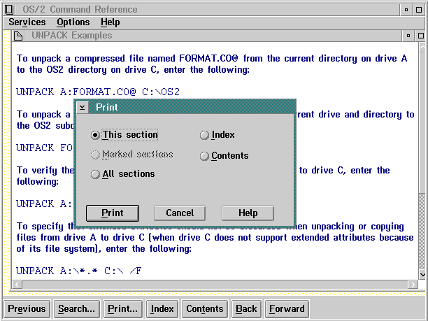

This choice, and the Print push button, display the window shown in the following figure. The output is the text within the window. The user can select any of the choices to print online information. All of the printed output is sent to the default printer. All of the information prints as WYSIWYG (What-You-See-Is-What-You-Get).

Print Window
Following are descriptions of Print window choices:
This section
Sections are marked with the mouse by pressing and holding the Ctrl key then clicking mouse button 1. Sections are marked with the keyboard by using the cursor keys to highlight the item and then pressing the spacebar. The same key sequences are used to unmark the selection.